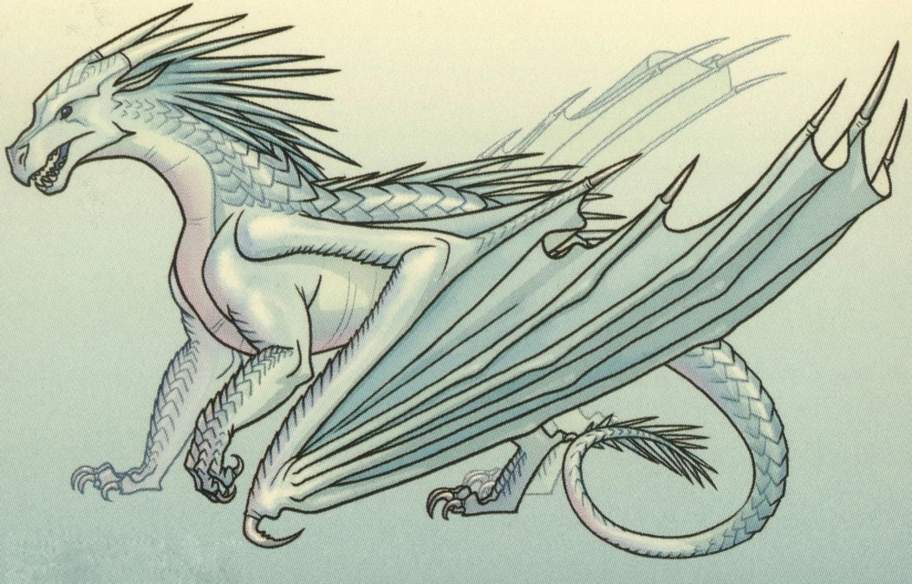

Добро пожаловать!
Небольшое пояснение к тесту:
Этот тест покажет какого вида драконом были бы Вы. Вариант с наибольшим количеством процентов подходит больше всего, но Вы можете выбрать и другие варианты. В вопросах нет неправильных ответов, отвечайте как посчитаете нужным. Если захотите преврать о себе - дело ваше, никто не осудит, но результат будет другим. Если будут варианты с одинаковым количеством процентов, значит Вы были бы полукровкой. После описания видов есть рандомизатор имён.
Выберите выриант с идеальной для вас активностью:
- Неактивный, сижу дома
- Неактивный, но гуляю один или два раза в неделю
- Неактивный, гуляю чуть больше двух раз в неделю
- Активный, дома почти не сижу
- Активный, занимаюсь спортом в оздоровительных целях
- Активный, часто занимась спортом
- Активный, люблю ходить в походы, дома почти не бываю
Выберите вариант наиболее близкий вам:
- Пофигист, либо вообще практически не реагирую, либо очень через большой промежуток времени
- Внешне пофигист, но бывает прорываются положительные (чаще) эмоции
- Внешне пофигист, но бывает прорываются негативные (чаще) эмоции
- В меру реагирую и выражаю эмоции, но чаще положительные эмоции
- В меру реагирую и выражаю эмоции, но чаще негативные эмоции
- Могу с трудом держать свои эмоции под контролем
- Легко возбудимый, постоянно испытываю сильные эмоции
Какой у вас рост:
- Меньше либо равен 165
- 166-170
- 171-175
- 176-180
- 181-185
- 186-190
- Больше либо равно 190
Какой у вас вес:
- Меньше либо равен 55
- 56-60
- 61-65
- 66-70
- 71-75
- 76-80
- Больше либо равен 85
Укажите наиболее подходящий вариант:
- Астеническое телосложение, не люблю заниматься спортом
- Астеническое телосложение, люблю заниматься спортом
- Среднее телосложение, спортом не занимаюсь
- Среднее телосложение, спортом занимаюсь
- Немного крупнее среднего типа телосложения, но спорт не люблю
- Немного крупнее среднего типа телосложения, спортом занимаюсь
- Полное телосложение, благодаря занятиям спортом сильная мускулатура, без рельефа\есть рельеф
Выберите вариант наиболее подхоядщий вам:
- Нравится снежная тайга
- Нравятся обычные леса
- Нравятся степи, частые ветра
- Люблю места жаркие и сухие
- Люблю места жаркие и с очень влажным воздухом, и редкими дождями
- Предпочитаю очень тёплый климат с умеренной влажностью и относительно частыми дождями
- Не испытываю проблем в любых условиях
Выберите идеальный для вас вариант:
- Просыпаюсь рано утром, весь день бодрствую, рано ложусь
- Просыпаюсь рано утром\утром, бывает хочу спать посреди дня
- Просыпаюсь в первой половине дня, чувствую бодрость ближе к вечеру
- Просыпаюсь ближе ко второй половине дня, ложусь поздно
- Просыпаюсь утром (часов 9-10), ложусь ближе к полуночи
- Просыпаюсь очень поздно, бодрствую всю ночь
- Плавающий режим дня (по-разному ложусь, встаю и бодрствую)
Выберите подходящий вариант:
- Хорошее зрение, обоняние и слух не очень хороши
- Слух хороший, обоняние и зрение не очень хороши
- Обоняние хорошее, слух и зрение не очень хороши
- Зрение и обоняние хороши, слух - нет
- Слух и зрение хороши, обоняние - нет
- Обоняние и слух хороши, зрение - нет
- Всё работает хорошо
Введите день вашего рождения:
Введите месяц вашего рождения:
- Земляной дракон:
- Морской дракон:
- Песчаный дракон:
- Небесный дракон:
- Радужный дракон:
- Ледяной дракон:
- Ночной дракон:
Земляные драконы
Место в семейной иерархии:
Чешуя:
Внешний вид: У представителей этого племени мощная
бронированная чешуя бурого цвета, иногда с янтарными и золотыми оттенками. Их также изображали зелёными
в графическом романе, но в самих книгах этого цвета не упоминалось. У земляных драконов большая
сплюснутая голова с высоко посаженными ноздрями, чтобы они могли долго лежать в грязи, выставив на
поверхность только морду. У них бывают карие, золотисто-янтарные, бледно-янтарные и карие с жёлтым
ободком глаза. Часто земляные драконы напоминают крокодилов или древних рептилий благодаря своим
крепким, коренастым телам.
Образ жизни: Земляные драконы откладывают яйца в гнёзда, которые хорошо
защищены нагретыми скалами и покрыты грязевой стеной. Первый дракончик, который вылупляется в кладке,
часто самый крупный и называется хранителем гнезда. Хранители обладают врождённым инстинктом помочь
другим драконятам в кладке выбраться из яиц. а позже они становятся главными в небольших стайках,
состоящих из драконов этой кладки. Родители, наоборот, проявляют мало заботы о своём потомстве. Как
только мать откладывает яйца, она забывает о них, а яйца и так находятся в тепле и безопасности. Поэтому
хранитель гнезда в каком-то роде заменяет своим братьям и сёстрам родителя.
Земляные драконы живут и трудятся в небольших отрядах, сформированных из драконят одной кладки.
Хранитель управляет ими. Они вместе растут, учатся охотиться и выживать и очень любят друг друга. В
войне из таких отрядов получаются специальные подразделения, которые хорошо сражаются вместе. Если
кто-то из группы умер, драконы могут взять себе кого-нибудь со стороны, чтобы восполнить потерю.
Драконы встречаются для спаривания раз в месяц в общую ночь, после чего разлетаются по своим гнёздам.
Родители не заботятся о своём потомстве, и часто даже неизвестно, кто отец.
Бедные и низкорождённые земляные драконы обычно живут на окраине земляной территории, возле дельты
Алмазной реки, в то время как остальные живут в центре королевства.Земляные драконы живут по несколько
особей в больших сделанных из грязи и растений домов. Они любят лежать возле своих жилищ в грязевых
лужах, не заботясь о том, что подумают о них другие племена. Хотя обычно считается, что земляные драконы
не блещут умом, это всего лишь стереотип. Это племя всеядно. Они могут питаться не только мясом и рыбой,
но и различными фруктами. Земляные спят, повалившись в кучу в своих гнёздах.
Песчаные драконы
Внешний вид: У песчаных драконов длинные шеи,
гребень от носа до хвоста, на конце которого находится ядовитое жало, как у скорпионов, и короткие морды
с маленьким рогом на носу и небольшими рожками над ушами. Цвет чешуи — бледно-жёлтый, бледно-золотой,
светло-песочный, белый с золотым, светлый жёлто-коричневый и другие почти белые цвета, которые легко
сливаются с песком. У некоторых песчаных драконов есть бурые крапинки на крыльях и морде, будто веснушки
у человека. Встречаются и чёрные узоры на чешуе. На крыльях бывают тёмные треугольники. Язык — чёрный и
раздвоенный, глаза — чёрные и блестящие, словно бусинки.
Образ жизни: Привыкшие к пустыне, песчаные драконы могут долго обходиться
без
воды и хорошо умеют зарываться в песок, чтобы спрятаться. Едят они тоже мало: Солнышку
достаточно одной ящерицы. Из-за своего образа жизни больше других племён
страдают клаустрофобией.
От чешуи песчаных исходит жар вне зависимости от температуры вокруг. У них лучше всех слух в Пиррии,
а также хорошо развито обоняние.
С детства песчаных дракончиков учат правильно держать хвост, чтобы случайно никого не поранить. Они
любят держать свой хвост более угрожающе, как скорпионы, чтобы запугать.
Ледяные драконы
Внешний вид: Цвет чешуи ледяных драконов варьируется
от серебристо-белого до светлых оттенков синего и пурпурного. Они часто описываются серебряными, подобно
луне, бледно-голубыми, как лёд, светлыми, как луна, или с чешуйками «цвета неба, отражённого на
заснеженных пиках». Иногда у ледяных могут встречаться и более необычные цвета, как у морских драконов,
например бледно-лиловый или бледно-розовый. Также упоминались тёмно-голубые и фиолетовые отметины, как у
Рыси.
Шею ледяных драконов украшает целая «грива» из шипов, которая тянется от шеи до хвоста. Шипы напоминают
сосульки, свисающие с лица дракона. Морды у ледяных очень узкие, а сами они быстрые, не очень крупные и
тощие. У них сильный, но тонкий, как хлыст, хвост с несколькими острыми шипами на конце. Глаза голубые,
чёрные или тёмно-серые. Язык — синий, раздвоенный. По венам ледяных драконов течёт кровь синего цвета,
когти у них зубчатые и очень острые, чтобы было удобно цепляться и за лёд, и отбиваться во время
атаки.
Образ жизни: Все драконы в племени распределяются по рангам, первый ранг —
самый уважаемый и лучший, седьмой — худший. Есть два отдельных подразделения этой системы: одна — для
драконят, а другая — для взрослых драконов. До того как дракончику исполнится семь лет, он активно
зарабатывает себе место в рейтинге: ходит на охоту, тренируется, следует обычаям ледяных драконов и
получает задания от своих родителей или опекунов. Тот ранг, с которым дракон встречает свой седьмой День
Яйца, определяет его дальнейшую жизнь, хотя и взрослые драконы потом могут подняться или опуститься в
рейтинге. Драконята, которые были причислены к высокому рангу, живут во дворце королевы и могут
участвовать в политической жизни племени. Эта система называется даром порядка. Список всех драконов
размещён на специальной стене, где указан ранг каждого. Когда дракон умирает или отправляется в
изгнание, его имя стирается со стены. В конце "Опасного дара" Стена рангов была уничтожена королевой Снежной.
Алмазный путь — последний способ для юного дракона изменить своё положение в рейтинге к его седьмому Дню
Яйца. На этом испытании самый низко стоящий дракон может бросить вызов самому высоко стоящему и занять
его место, убив противника. Но это очень рискованно и может закончиться плачевно для бросившего вызов.
В королевской семье принято обезглавливать умершего члена семьи и вешать голову на стену, а тело
спускать в океан.
Небесные драконы
Чешуя:
Внешний вид: У небесных драконов обычно красная,
розовая, оранжевая или золотистая чешуя с жёлтыми, янтарными и иногда медными нижними чешуйками. Цвет
глаз обычно оранжевый или жёлтый, но у драконов с огненной чешуёй глаза голубые. Чешуйки небесных
драконов прочны, как алмаз, а крылья — больше, чем у кого-либо из других племён. Это делает их
превосходными летунами и бойцами. Огонь, который выдыхают небесные, жарче, чем у других племён. У них
также длинные изящные шеи и хорошо развитая дыхательная система, которая помогает им выживать на больших
высотах. Морды — длинные и узкие, с роговым выступом на кончике носа; рога — длинные, тонкие и
закрученные. В целом, вся фигура небесного дракона говорит о том, что он рождён летать.
Образ жизни: Небесные драконы охочи до развлечений и любят смотреть на
кровавую бойню, но в то же время они чтят традиции и помнят о правосудии, хотя это и может касаться
только их племени. Одна из древних традиций небесных — Щит паладина: чемпион королевы может
воспользоваться своим высоким положением и защитить подсудимого, выйдя на бой с представителем
обвинителя. При правлении Пурпур у небесных в ходу было много пыток, которыми они развлекали себя или
мучили бойцов арены.
Неизвестно, живут ли небесные драконы всю жизнь с выбранным партнёром, но у них существует программа,
распределяющая пары. Впрочем, это может быть всего лишь военным обычаем. Драконята небесных растут в
отдельном помещении. Здесь они играют и общаются. Многие драконихи очень заботятся о своих малышах и
сделают ради них всё что угодно.
Существует особая традиция проводов умершего. Тело оборачивают в белую ткань и относят на какую-нибудь
вершину, где почивший лежит неделю, чтобы его дух смог вознестись на небо и переродиться в другом
небесном драконе.
Радужные драконы
Внешний вид: Радужные драконы умеют менять окраску в
зависимости от эмоций. Они могут также изменить цвет, чтобы замаскироваться или покрасоваться. Они
никогда не остаются одноцветными надолго.Радужные изящны и вытянуты, под рогами за ушами находится
воротник, а хвост — тонкий и цепкий, чтобы хвататься за деревья. Когда радужный напуган, он поднимает
свой воротник-капюшон, чтобы казаться больше.
Образ жизни: Радужные драконы ведут размеренную, не обременённую заботами
жизнь. Они ленивы и не очень умны. Ссоры и конфликты — редкость в их спокойном обществе. Любимое занятие
радужных драконов — спать и греться под солнцем. Родители не следят за своими яйцами. Вся кладка
находится в одном гнезде. Взрослые растят их вместе, раз в несколько дней наведываясь в гнездо и забирая
вылупившихся драконят.
Прежде чем образовать пару, драконы плюются ядом на лист и смотрят, нейтрализует ли один плевок другой.
Так они узнают, не родственники ли они.
Способ выбора новой королевы у радужных менялся в ходе истории. Давным-давно радужные сражались за трон,
как в других племенах, но потом они разработали более безопасный вариант — соревнование, состоящее из
нескольких этапов. В итоге, они решили просто менять королев несколько раз в год. Каждая дракониха,
желавшая стать королевой, могла побыть ею месяц в год. Особенно это любили драконы с самыми яркими
именами. Когда Ореола стала королевой, вызвав предыдущую на соревнование, традиция смены королев ушла в
прошлое.
Как и остальные драконы, королева живёт в палатке, однако её пышнее украшают цветами. Просители
выстраиваются в очередь, чтобы доложить королеве о своих проблемах.
Радужные драконы редко покидают свой лес. У них нет письменности, они не умеют читать, едва знают счёт и
слабо осведомлены о других драконьих племенах. С появлением королевы Ореолы
всё изменилось: она учредила
в лесу школу для своих подданных. Однако, исходя из слов королевы Лагуны, следует, что радужные не
всегда были такими и когда-то считались достаточно воинственным племенем. В ту пору они объединились с
земляными драконами и представляли угрозу для морских.
Радужные всеядны, но в основном питаются фруктами, а не мясом. Они даже держат ленивцев в качестве
домашних животных. Если ленивец забирается на спину спящему радужному, это значит, что он выбрал его и
будет служить своему хозяину верно до конца своих дней.
Ночные драконы
Умения:
Внешний вид: У ночных драконов раздвоенный чёрный
язык и чёрная, иногда с фиолетовым или зелёным отливом чешуя. На животе чешуя может быть серебристого,
пурпурного, тёмно-зелёного или тёмно-синего цвета. У тех, кто обладает даром читать мысли, у уголков
глаз есть две серебристых «слезинки». Глаза обычно тёмно-зелёные или чёрные. Нижняя сторона крыльев
всегда чёрная, с вкраплениями серебряного, что напоминает звёздное небо. У ночных драконов существует
теория, что узор серебряных вкраплений передаётся по наследству и схож у близких родственников.
Образ жизни: Раньше ночные драконы вели ночной образ жизни и спали днём,
но позже их режим поменялся, и они стали бодрствовать днём, как и другие племена. Они образуют пары
длиной на всю жизнь, как морские драконы. Драконята живут в отдельных спальных пещерах на склоне
вулкана. Пока им не исполнится десять лет, им не разрешено летать на материк, поскольку они не умеют ещё
хранить секреты.
До побега на остров ночные драконы были высокоразвитым племенем с налаженной торговлей с другими
племенами и системой образования. Ночные отличаются безоговорочной преданностью своему племени и готовы
на всё ради его блага.
Морские драконы
Внешний вид: Цвет чешуи морских драконов варьируется
от синего до зелёного, иногда встречается индиго, хотя принцесса Анемона светло-голубого цвета с каплей
бледно-розового, как у морской ракушки. На солнечном свете чешуя морских сверкает, как изумруды и
сапфиры. У них обычно зелёные или голубые глаза, но могут быть и небольшие отклонения, как у Глубина, у
которого были серо-зелёные глаза, или как у Шквала и Альбатроса, у тех они были тёмно-синими, почти
чёрными.
У морских драконов есть плавники и перепонки между пальцами. Плавники проходят по спине до хвоста и на
груди. Длинные, мощные хвосты помогают им отлично плавать и защищаться. Одним ударом хвоста они могут
создать большую волну. По бокам шеи расположены жабры, которые позволяют дышать под водой. Хотя морские
драконы невысоки и коротколапы, они крепко сбиты и у них длинные, вытянутые туловища. Голову украшают
изогнутые рога, а на подбородке можно заметить пару небольших отростков.
По всему телу морских драконов бегут светящиеся узоры, которые они могут зажигать в разном порядке.
Люминесценция на хвосте, морде, лапах, животе, боках и нижней стороне крыльев помогает им общаться под
водой, а также привлекать пару.
У членов королевской семьи крылья украшены светящимися полосками, которые спиралью идут на внутренней
стороне крыла по передней кромке, а в средней части переходят в новые, напоминающие следы перепончатых
лап.
Образ жизни: Морские драконы живут на востоке Пиррии, среди многочисленных
островов. Питаются преимущественно морскими флорой и фауной, но и не брезгую пищей с суши. Для жизни
требуется водоём с пресной водой или морской водой. Из-за водного образа жизни и умения видеть в
темноте, не сильно привязаны к времени суток.
Рулетка имён:
Имена земляных драконов
Имена морских драконов
Имена небесных драконов
Имена радужных драконов
Имена песчаных драконов
Имена ночных драконов
Имена ледяных драконов